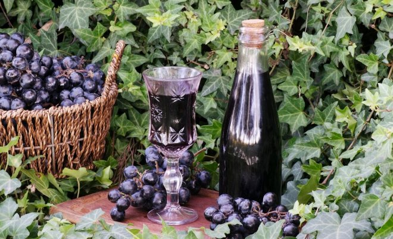
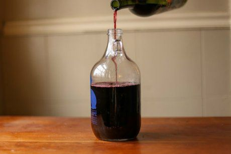

shutterstock.com
Изготовление вина из винограда – процесс довольно хлопотный, требующий достаточно много времени и соблюдения технологий. Однако эту науку по силам освоить даже начинающим виноделам. О том, как приготовить вино из винограда, читайте в нашей статье.
Приготовление вина из винограда в домашних условиях включает несколько этапов. Для начала нужно тщательно отобрать ягоды и выбрать только спелые и неповрежденные гнилью. Перед приготовлением сусла ягоды следует отделить от веточек и ни в коем случае не мыть, чтобы не смыть находящиеся на поверхности ягод дикие дрожжи.
Давить ягоды рекомендуется вручную или с использованием специального пресса, чтобы не раздавить косточки, иначе готовое вино будет горчить.
Раздавленную ягодную массу необходимо оставить на пару дней отстояться, затем процедить, отжать сок из ягод через марлю. При необходимости добавить сахар и отправить сок на брожение, закрыв емкость специальным водяным затвором или резиновой перчаткой.
Переброженный сок следует аккуратно перелить в чистую емкость, не потревожив образовавшийся на дне емкости осадок. Делают это с помощью специальной трубки в затворе.
Полученное вино разливают по бутылкам и отправляют на дозревание. Чем дольше будет зреть вино, чем вкуснее и насыщеннее оно получится.
Вино из винограда Изабелла в домашних условиях
Ароматное сладкое вино крепостью 9-12% из винограда знаменитого сорта.
Вам понадобятся: 15 кг винограда, сахар по вкусу, вода при необходимости.
Приготовление. Отобранные для приготовления вина ягоды раздавите руками или картофельным прессом. Полученную мезгу оставьте на 3-4 дня и помешивайте 1-2 раза в сутки. Затем процедите через марлю и отожмите сок. Если он получился слишком кислым, добавьте в него 50-500 мл воды (на 1 л сока). Перелейте сок в бутыль, заполнив ее на 2/3, добавьте половину сахара (из расчета 100-150 г на 1 л сока), герметично закройте гидрозатвором или наденьте на горлышко резиновую перчатку с проделанной в одном пальце дырочкой и оставьте в темном помещении с комнатной температурой (16-22°С). Через 5 дней добавьте половину оставшегося сахара, разбавив его в 0,5 л сцеженного бродящего сока и перелив обратно в бутыль. Спустя еще 5 дней добавьте оставшийся сахар. Всего брожение будет длиться 35-70 дней. Когда перчатка опадет, само вино посветлеет, а на дно опустится осадок, аккуратно перелейте вино в чистую емкость, сняв с осадка. На этом этапе можно добавить еще сахара, оставив на 7-10 дней под гидрозатвором. Хорошо закупорьте емкость и поместите в прохладное (6-16°С) темное место для выдержки. Спустя 3-6 месяцев выдержанное вино можно разлить по бутылкам и хранить в погребе или холодильнике до 5 лет.
Простое вино из винограда
Не сложный рецепт приготовления вина из винограда, с которым справится даже начинающий винодел.
Вам понадобятся: 10 кг винограда, 2,5-3 кг сахара.
Приготовление. Оборвите ягоды с гроздей и раздавите их прессом до появления сока. Накройте емкость с виноградной массой марлей оставьте при комнатной температуре на 4-5 дней, помешивая 2 раза в сутки. Затем процедите сок через дуршлаг в бутыль, а ягодную массу отожмите через марлю. Добавьте в сок сахар, хорошо перемешайте, наденьте на горлышко бутыли перчатку и оставьте бродить на 14-21 день. Когда перчатка сдуется, перелейте вино в чистую емкость, аккуратно сняв с осадка, и поместите в прохладное место на 30 дней. Через каждые 10 дней переливайте вино в чистую емкость, снимая с осадка. Затем перелейте в бутылки и выдержите вино еще 30 дней в прохладном месте.
Домашнее вино из белого винограда
Восхитительное вино с неповторимым ароматом и приятным прозрачно-янтарным цветом.
Вам понадобятся: 10 кг винограда (сортов Шардоне, Совиньон Блан, Рислинг, Пино Блан), 3 кг сахара.
Приготовление. Раздавите виноград до получения сока и оставьте при комнатной температуре на 5 дней, периодически помешивая ягодную массу. Затем процедите и слегка отожмите отстоянный сок через марлю в чистую бутыль, добавьте сахар по вкусу (в зависимости от сладости винограда и желаемого готового напитка). Закройте бутыль гидрозатвором (или резиновой перчаткой) и оставьте на 3 недели бродить. После окончания брожения аккуратно процедите вино, чтобы не потревожить осадок, разлейте по бутылкам, закупорьте и поместите в прохладное место на 4 недели на выдержку.
Домашнее вино из красного винограда
Готовое вино, приготовленное с соблюдением технологии, получается очень ароматным, с насыщенным цветом и ярким вкусом.
Вам понадобятся: 5 кг винограда (сортов Пино Нуар, Мерло, Каберне Совиньон, Изабелла), 1,5 кг сахара.
Приготовление. Ягоды переберите, удалите грозди и некачественные ягоды и раздавите. Сок процедите, перелейте в кастрюлю и слегка подогрейте, чтобы растворить в нем 750 г сахара. Отжатые ягоды поместите в бутыль, залейте подслащенным соком, накройте марлей и оставьте в темном теплом месте на 5 дней. Помешивайте ягодную массу дважды в сутки. Затем процедите и отожмите годную массу в чистую емкость, добавьте оставшийся сахар, перемешайте и закройте водяным затвором или резиновой перчаткой и поставьте в затененное теплое место на 3 недели. Как только закончится процесс брожения, перелейте вино в чистую емкость, стараясь не потревожить выпавший осадок, закупорьте и оставьте в прохладном месте еще на 4 недели настояться. Каждые 10 дней переливайте вино в чистую емкость, снимая с осадка. Затем поместите емкость с вином в холодильник и настаивайте еще минимум 4 недели.
Вино из винограда с водой

Добавление воды делает вкус вина более мягким. Главное – соблюсти правильные пропорции.
Вам понадобятся: 5 кг винограда, 3 кг сахара, 12 л воды.
Приготовление. Ягоды переберите, раздавите в эмалированной посуде и оставьте на 3 дня, накрыв емкость марлей. Помешивайте ягодную массу 2-3 раза в сутки. Процедите ее и отожмите сок из раздавленных ягод в бутыль, добавьте треть сахара, хорошо размешайте, закройте водяным затвором и оставьте бродить в темном теплом месте на 1-2 месяца. Раз в неделю переливайте сок в чистую посуду, аккуратно снимая с осадка. В первые 10 дней брожения добавьте в два приема оставшийся сахар. Еще через неделю разбавьте процеженный сок водой. Когда брожение закончится, готовое вино разлейте по бутылкам и оставьте дозревать в темном прохладном месте. Чем дольше будет зреть вино, тем вкуснее оно получится.
Домашнее сухое вино из винограда
Для приготовления сухого вина используйте виноград с содержанием сахара до 20%.
Вам понадобится: черный или белый виноград.
Приготовление. Тщательно отобранный виноград раздавите, приготовив сусло, и оставьте отстояться в теплом месте на 3-5 дней – для темного винограда и на сутки – для белого винограда, пока наверх не поднимутся раздавленные ягоды (мезга). Затем процедите сок и отожмите мезгу через марлю в емкость с узким горлышком, закройте резиновой перчаткой или гидрозатвором и оставьте сок бродить на 10-25 дней при комнатной температуре. Когда закончится брожение, перелейте вино в чистую емкость, не потревожив осадок, и поставьте дозревать в темное прохладное помещение на 1 месяц (для белого вина) или на 2-3 месяца (для красного).
Домашнее вино из винограда Молдова
Правильное вино из винограда Молдова получается сладким, насыщенного рубинового цвета, с приятным терпким послевкусием.
Вам понадобятся: 30 кг винограда, до 5 кг сахара, до 10 л воды.
Приготовление. Ягоды переберите, раздавите и оставьте на 3-4 дня, каждый день помешивайте. Затем процедите и отожмите сок, добавьте сахар, закройте емкость водяным затвором и оставьте бродить в теплом темном месте на 1-2 месяца. После окончания брожения перелейте вино в чистую емкость, сняв с осадка, и отправьте на дозревание в прохладное место до 6 месяцев.
Домашнее вино из винограда Лидия
Готовое вино из сорта винограда Лидия обладает земляничным ароматом и приятным вкусом.
Вам понадобятся: 10 кг винограда, 3 кг сахара.
Приготовление. Отобранные ягоды раздавите, переложите в глубокую емкость, накройте марлей и оставьте в темном месте с комнатной температурой на 5 дней. Затем процедите сок в большую банку или бутыль, удалив мезгу, добавьте сахар, хорошо перемешайте, закройте и оставьте бродить в темном месте на 3 недели. Затем аккуратно с помощью трубки в гидрозатворе (если такой использовался) снимите вино с осадка, разлейте по бутылкам и поместите на дозревание в погреб не менее чем на 40 дней.
Домашнее вино из винограда без сахара
Чтобы вино получилось вкусным и не кислым без добавления сахара, используйте для приготовления виноград сладких сортов.
Вам понадобится белый виноград.
Приготовление. Отобранные ягоды раздавите и дайте отстояться в течение 12-18 часов в прохладном месте, а затем профильтруйте и удалите мезгу. Полученный сок перелейте в бутыль, закройте затвором и оставьте при комнатной температуре бродить на 3 недели. Затем перелейте вино в чистую емкость, плотно закройте ее и оставьте еще на 3 недели добродить. Спустя время снова перелейте вино в чистую емкость, закупорьте и оставьте еще на 1 месяц, после чего опять перелейте, сняв с осадка. Если вино остается мутным, поместите емкость с ним в темное место с температурой от 0°С до 6°С на пару недель, за это время муть уйдет в осадок. Готовое вино разлейте по бутылкам и пробуйте или поместите на хранение в погреб.
Вино из винограда в банке
Если у вас нет специальных больших бутылей для приготовления вина, используйте для этого обычные стеклянные банки.
Вам понадобятся: 10 кг винограда, 2,5 кг сахара.
Приготовление. Ягоды переберите, удалите гроздья и раздавите в эмалированной емкости. Накройте ее марлей и оставьте ягодную массу в затененном месте на 4-5 дней, помешивая дважды в день. Затем процедите виноград через сито и отожмите из мезги сок, разлейте его по банкам, добавьте равное количество сахара, перемешайте. На горлышко банки натяните резиновую перчатку с проделанной иглой в одном пальце дырочкой, обвяжите перчатку резинкой и оставьте вино бродить на 2-3 недели. После этого аккуратно процедите его через марлю, стараясь не потревожить выпавший осадок, разлейте по бутылкам и поместите в прохладное место на 1 месяц. За это время трижды перелейте вино в чистую тару, снимая с осадка. В конце указанного срока готовое вино можно дегустировать и отправлять на хранение.
Вторичное вино из жмыха винограда
Жмых – это отжатые раздавленные ягоды винограда. Их можно не выбрасывать, а приготовить так называемое "петио" − слабоалкогольное легкое вино.
Вам понадобятся: 7 л жмыха, 1 кг сахара, 5 л воды.
Приготовление. Растворите в воде 800 г сахара и залейте полученным сиропом жмых, размешайте и перелейте в бутыль. Закройте гидрозатвором или перчаткой и поместите в темное теплое место на 2 недели. В первые сутки перемешайте смесь 2 раза. Затем процедите вино и отожмите мезгу в чистую емкость, добавьте оставшийся сахар и оставьте еще на 1-1,5 месяца. Готовое вино снимите с осадка с помощью трубки, по желанию добавьте еще сахара или спирта для крепости, разлейте по бутылкам и поместите в темное прохладное место на хранение. После 3 месяцев выдержки вино можно дегустировать.
Вино из сока винограда
Вкусное домашнее вино можно приготовить и из выжатого виноградного сока.
Вам понадобятся: 3 л виноградного сока, 800 г сахара, 1,5 ч.л. сухих дрожжей, 4 стакана воды.
Приготовление. Сахар растворите в кипящей воде, добавьте сок и растворенные в 1 ст.л. горячей воды дрожжи. Хорошо перемешайте, перелейте в бутыль, закройте резиновой перчаткой и оставьте в теплом месте примерно на 24 дня. Когда опадет перчатка, процедите вино, разлейте по бутылкам и пробуйте.
Вино из кислого винограда
Из мелкого синего винограда, который обычно выращивают садоводы-любители, можно приготовить вполне достойное вино.
Вам понадобятся: 5 кг винограда, 2 кг сахара.
Приготовление. Ягоды переберите и раздавите в эмалированной емкости. Процедите сок и отожмите мезгу в банку или бутыль, заполнив ее на 2/3. Закройте водяным затвором и поместите в прохладное место на 2-3 месяца. По истечении указанного срока жидкость можно процедить, сняв с осадка и употреблять как сухое столовое вино. Или же добавить сахар, закупорить бутыль и оставить еще на 1 месяц. Готовое вино аккуратно снимите с осадка, разлейте по бутылкам и храните в погребе или холодильнике.
Вино из недозрелого винограда
Из чуть недозревшего винограда лучше приготовить сладкое десертное вино.
Вам понадобятся: недозрелый виноград, сахар, вода и винные дрожжи.
Приготовление. Ягоды отделите от веточек и раздавите. Полученную мезгу подогрейте до 60°С, затем остудите до комнатной температуры, процедите и отожмите сок. По вкусу разбавьте сок водой, добавьте сахар и подготовленную согласно инструкции на упаковке закваску из дрожжей. Закройте емкость с соком затвором или перчаткой и оставьте бродить при температуре около 20°С на 1-2 месяца. Затем аккуратно снимите вино с осадка, добавьте еще сахара (100-150 г на 1 л жидкости), перемешайте, разлейте по бутылкам, закупорьте и поместите на дозревание при комнатной температуре на 2 месяца.
Как видите, приготовление вина из винограда – процесс довольно кропотливый, однако вполне поддающийся освоению. Попробуйте приготовить домашнее вино из винограда и зовите друзей на дегустацию!